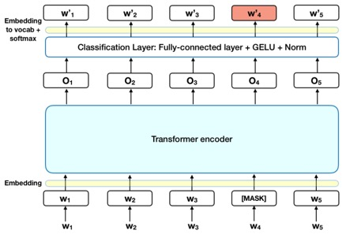
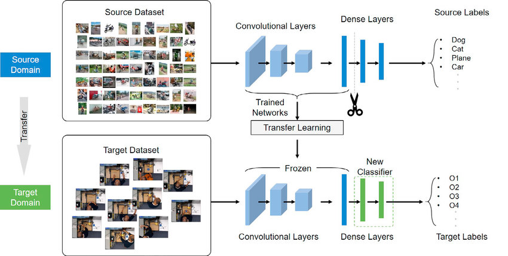
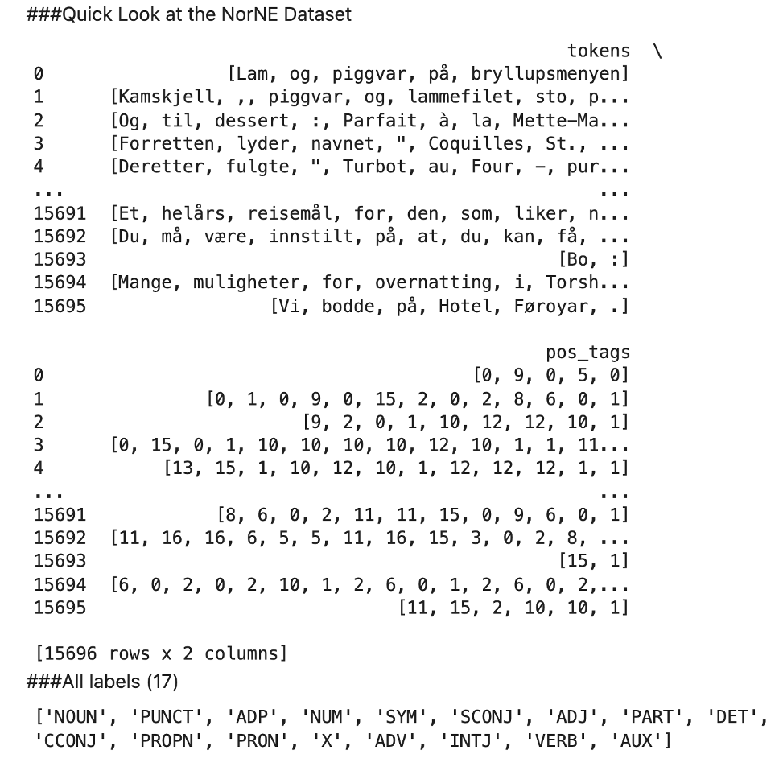
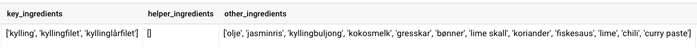
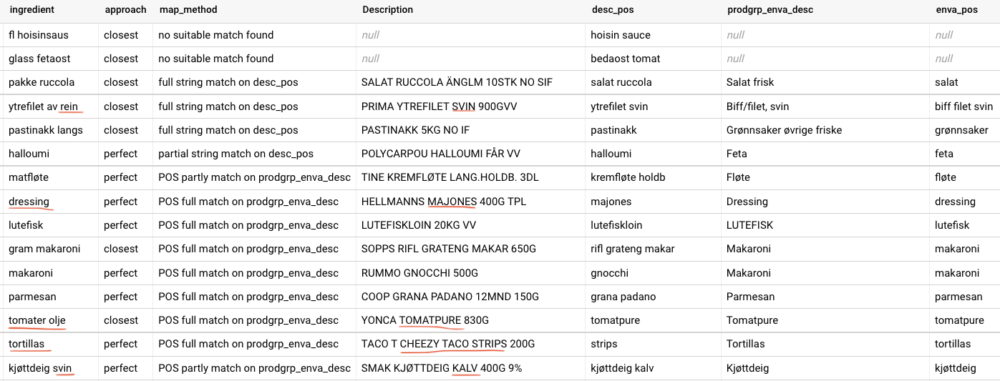

TODO: change order of NLP and business case
Dinner Blackout business caseData Scientist @ Coop
MSc Energy & Environmental Engineering, NTNU
Experience from Nordea and Schibsted prior to Coop.
Disclaimer: I am not an expert on any of the things I will present here today. The goal is to show an example of a Data Science project in real business setting with real data.
Dinner Blackout business caseDo you know what to make for dinner this evening?
We think many of us don’t - and we want to see if we can do anything to help you with that.
Dinner Blackout: can we use Coop members’ purchase history to make it easier and quicker for them to find a relevant recipe?
What is the main objective of the Dinner Blackout project?
Not: the algorithm ranking recipes (per member).
Rather: a product making it easier for our members to find a relevant recipe.
Current state: Proof of Concept (POC), we want to test on our members if the idea has any promise.
The goal is a computer capable of “understanding” the contents of documents, including the contextual nuances of the language within them.

Easy to fine-tune BERT for different NLP tasks, like:
Data: Scraped Coop recipes
Tools:

| Ingredients list | Clean A | Clean B | Clean C |
|---|---|---|---|
| 350 g kyllinglårfilet | kylling | kyllinglår | kyllingfilet |
| 150 g gresskar | gresskar | ||
| 120 g grønne bønner | bønner | grønne bønner | |
| 4 dl jasminris | ris | jasminris | |
| 1 ss nøytral olje | olje | nøytral olje | |
| 4 ss rød curry paste | curry | rød curry paste | curry paste |
| 2 1/2 dl kyllingbuljong | buljong | kyllingbuljong | kylling |
| 4 dl lett kokosmelk | kokosmelk | lett kokosmelk | |
| 1 lime - revet skall av | lime | limeskall | revet skall av lime |
| 2 ts fiskesaus | fiskesaus | fisk | saus |
| Koriander | koriander | ||
| Rød chili - finhakket | chili | rød chili | |
| 1 lime i båter | lime |
POS = Part of Speech
Transfer learning on top of the pretrained BERT model
Identifies word types, e.g. noun, adjective, pronoun, etc.
For the recipes, we’re interested in nouns.
ts, dl, etc.)regex as well…
| Ingredients list | Clean A | Clean B | Clean C |
|---|---|---|---|
| 350 g kyllinglårfilet | kylling | kyllinglår | kyllingfilet |
| 150 g gresskar | gresskar | ||
| 120 g grønne bønner | bønner | grønne bønner | |
| 4 dl jasminris | ris | jasminris | |
| 1 ss nøytral olje | olje | nøytral olje | |
| 4 ss rød curry paste | curry | rød curry paste | curry paste |
| 2 1/2 dl kyllingbuljong | buljong | kyllingbuljong | kylling |
| 4 dl lett kokosmelk | kokosmelk | lett kokosmelk | |
| 1 lime - revet skall av | lime | limeskall | revet skall av lime |
| 2 ts fiskesaus | fiskesaus | fisk | saus |
| Koriander | koriander | ||
| Rød chili - finhakket | chili | rød chili | |
| 1 lime i båter | lime |
Results in:

Data: Recipe ingredients (from Part 1)
Tools:
Contents:
sentence_transformers
last_hidden_states tensor in BERT modelNB: Norwegian BERT + fine-tuning is a huge productivity leap for utilising deep learning. Just a few years ago the norm was to train the model from scratch with your own data!
Cosine distance between vectors
E.g.: King - Man + Woman = Queen
strawberry and melon are close
python-string-similarity library
Example metrics:
strawberry and strawberries are close
I have used both, as vector based sometimes is way off, e.g. curry and curry paste
What is similarity in this case? Taste, perhaps? Blomkål <> Blomkålris?

Data:
Tools: SQL (BigQuery)
products <> ingredients